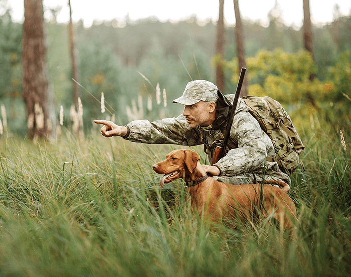
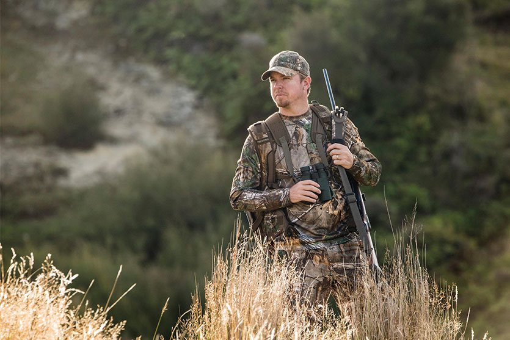
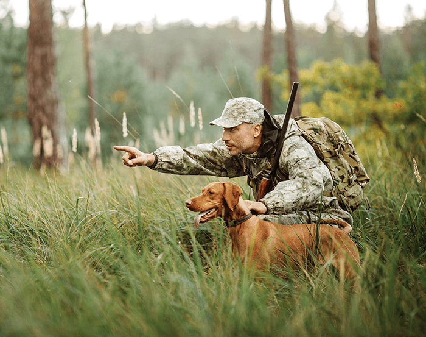
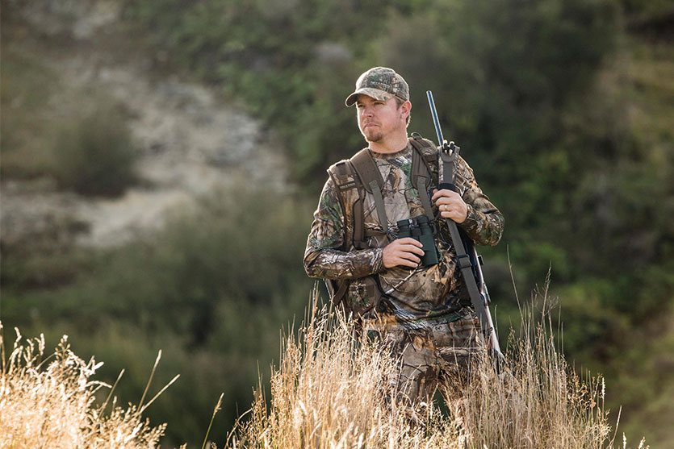

Vrste načina lova
Zavisno od vrste divljači lov se može obavljati na više načina: čekanjem, šunjanjem, pogonom, prigonom, vabljenjem i lov sa lovačkim psima. Osim toga postoji tamanjenje štetočina i hvatanje žive divljači što takođe vrše lovci. Da bi se postigao što bolji uspjeh svaki od ovih načina zahtijeva dobro poznavanje života i ponašanja divljači. LOV ČEKANjEM
To je pojedinačan način lova kod kojeg lovac sa određenog mjesta – stajališta ima pogodne uslove za ostrel. Čekanjem se lovi na mestima gde divljač izlazi radi ishrane, ili na premetima, putevima, preletima. Ovim načinom lova mogu se loviti jeleni, srne, divokoze, medvjedi, divlje svinje, lisice, patke, guske, golubovi, šljuke i td. Za čeke se odabiraju pogodna mesta gde divljač obično izlazi, odnosno prelazi ili preleće. Ovakva mesta – čeke mogu biti i posebno uređena na zemlji ili visoko iznad zemlje. Ovakvim načinom se može dobro osmotriti divljač koju lovimo i ustanoviti da li je za ostrel ili nije.
LOV ŠUNjANjEM
To je takav način pojedinačnog lova kod kojeg lovac kretanjem po lovištu pronalazi divljač i prilazi joj na rastojanje odakle može izvršiti siguran pogodak. Šunjanjem se može loviti skoro sva divljač. Prilikom šuljanja lovac mora biti oprezan. Kretati se korak po korak uz stalno osmatranje i zastajkivanje.
LOV POGONOM
Pogon je takav način lova kod kojeg su lovci postavljeni u jednoj liniji na razmaku 40-60 m i laganim kretanjem naprijed pokreću divljač. Između lovaca mogu se postaviti hajkači čiji je zadatak pokretanje divljači. Ovaj način lova primjenjuje se u ravnim, otkrivenim ili slabo pokrivenim terenima. Mogu se loviti zečevi, fazani, jarebice i šljuke.
LOV PRIGONOM ILI HAJKOM
Ovaj način grupnog lova je takav da lovci na stajalištima i čekama dočekuju divljač koju im gonići prigone. Ovim načinom se love divlje svinje, vukovi, lisice. U ovaj način lova ubrajamo kružni lov u kojem se lovci i hajkači pokreću prema jednom određenom mjestu u središtu kruga i tom prilikom lovci pucaju na divljač koja izlazi iz njega. Ovakav način lova primjenjuje se u nizijskim i bogatim lovištima, gdje učestvuje veliki broj lovaca.
LOV VABLjENjEM
Ovaj način lova se sprovodi oponašanjem odgovarajućih glasova divljači kojim se ona primami na daljinu potrebnu za siguran pogodak. Vabljenjem se može loviti većina divljači. Neke vrste divljači vabe se na taj način što se imitira glas mužjaka ili ženke koji oni ispuštaju prilikom parenja ili prikupljanja. Kod nekih vrsta se imitira glas divljači kojom se vrsta, koju vabimo, hrani. Vabljenje se može vršiti priručnim sredstvima (trava, lišće i sl.), a može i specijalnim vabilicama. Srndać se vabi imitiranjem glasa srne kojeg ona pušta prilikom parenja. Najefikasnije vabljenje je između 10 i 12 časova za vrijeme najvećih vrućina. Prilikom vabljenja dobro je da je lovac sakriven i maskiran, ali nije neophodno. Najbitnije je da je miran i da se ne miče. Posle svakog vabljenja čeka se 5-10 minuta, zatim ponovo vabi. Srndać, obično mlađi, dotrči u najbržem kasu neposredno do lovca, što predstavlja pravi užitak. Stariji srndać je oprezniji. Lisica se vabi pomoću oponašanja glasa miša, osobito u večernjim časovima ili kmečanjem zeca. Dobro se treba maskirati. Dobro je da dva lovca zajedno čekaju okrenuti leđima jedan drugom, jer tako imaju bolji pregled, pošto se ne zna odakle će lisica doći. Za vrijeme parenja vukova zavijanjem se namami drugi vuk.
LOV SA PSIMA
Lovački pas je nezamjenljiv pomagač u lovu. Tokom vremena je lovac usavršio i specijalizirao razne vrste pasa za pojedine načine lova i pojedine vrste divljači. Određene vrste pasa imaju određene osobine koje su idealne da budu saputnici čoveka tokom lova. Pomenućemo neke od glavnih vrsta lovačkih pasa, a to su: ptičari, goniči i krvoslednici. Ptičari se uglavnom koriste da, kao što im ime govori, love ptice ali i drugi manji plen, na primer, zečeve. Ovaj tip lovačkog psa locira plen, zatim ih uplaši da bi ih lovci opazili i uhvatili. Kada je plen pogođen, ptičari ga donose svom vlasniku. Goniči su rasa koja verovato najduže lovi uz čoveka. Oni su tu da pokrenu krupniju divljač (lisice, srne i divlje svinje), zatim da ih navode na beg, a zapravu u pravcu lovaca. Krvoslednici prate svoj plen pomoću njuha. Oni najbolje prate ranjenu divljač. Uglavnom ih lovci vode na povocu, pogotovu ako je udaljenost velika između njih i ranjenog plena. Svaki lovački pas mora da ima određene veštine i osobine:
1. Jaku usmerenost ka plenu
2. Prihvatanje i brzo usvajanje dresure i treninga
3. Izdržljivost i atletsku građu
Neke od vrsta lovačkih pasa su: Terijeri, Jazavičari, Polarni psi, špicevi i primitivni tip pasa ,Goniči, Ptičari, Španijeli, retriveri i psi za vodu.
LOV SA PTIČAROM
Ptičarima se uglavnom lovi leteća divljač, ali su dobri i za istjerivanje zeca. Mogu se koristiti i za slijeđenje krvnog traga i sl. Pošto ptičar ima urođenu osobinu za markiranje divljači, upotrebljava se na otvorenim terenima, ritovima i slabo pokrivenog terena. U jako pokrivenim terenima ptičar je slabo upotrebljiv jer pri markiranju ga lovac ne vidi, čime se ptičar kvari.Ptičar u trku ispred lovca, kretanjem desno-lijevo, koristeći struju vjetra, dosta daleko može osjetiti divljač. Kada oseti divljač staje kao ukopan (markira), obično sa dignutom prednjom nogom. Ako je još daleko od divljači, oprezno se privlači dok je dobro ne oseti ili ne ugleda. Markiranu divljač po pravilu lovac pokreće i gađa je u pokretu. Ostreljenu divljač pas treba da donese. Pasmine ptičara rado aportiraju (donose divljač) kako sa zemlje tako i iz vode.


 


